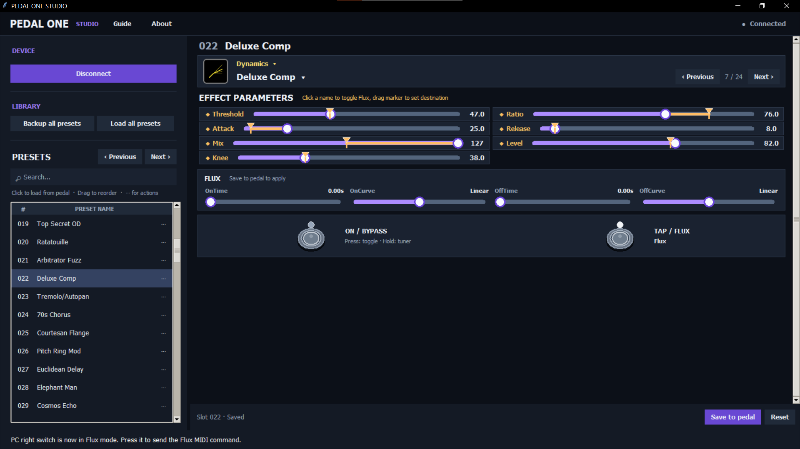

THE DESKTOP EDITOR FOR HX ONE
More control.
More room to create.
Meet the focused Windows workspace for your Line 6 HX One. Edit and organize presets, try different effects and Flux parameters and back up your pedal - from one place with a big screen.
PEDAL ONE STUDIO / PRESET EDITOR CONNECTED

Made independently for Line 6 HX One. Requires a Windows PC and a USB MIDI connection to the pedal.
PERSONAL LICENSEONE-TIME PURCHASE
14,99 EUR
Pay once for the Windows app.
- ✓ Non-expiring license key
- ✓ Full preset editor and library tools
- ✓ Full-bank backup and restore
Checkout will open here when the product is live.